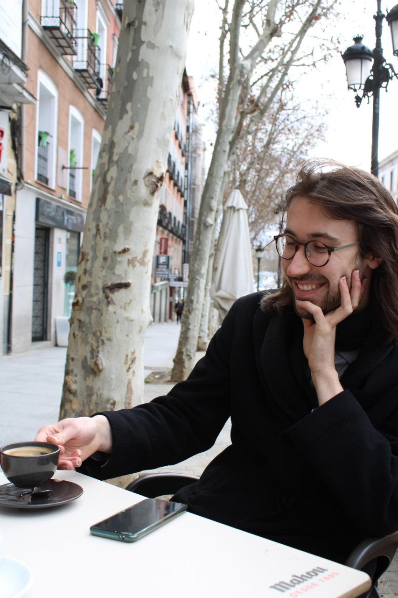

Jakob Hollweck
Theoretisch-Physikalisches Institut
Friedrich-Schiller Universität Jena
Jena, Germany

I am a doctoral researcher in theoretical physics at Friedrich Schiller University Jena, working with Martin Ammon.
I am seeking postdoctoral positions starting in 2027.
Research
Under construction...
Papers and preprints
Full record on INSPIRE-
A generating functional for infrared-safe QED amplitudes
Preprint (2026)arXiv:2608.18205A coherent-state generating functional incorporating Faddeev–Kulish dressings, with a path-integral description at tree level.
-
Exponentiation of higher-point and higher-genus Virasoro conformal blocks in the semiclassical limit
A proof of semiclassical exponentiation for general channels and higher genus, understood as a formal power series.
-
Thermal n-point conformal blocks in four dimensions from oscillator representations
Thermal blocks in the projection channel for scalar external operators and scalar exchange.
-
Conformal blocks in two and four dimensions from oscillator representations
Oscillator methods for higher-point global blocks in two dimensions and their extension to four dimensions.